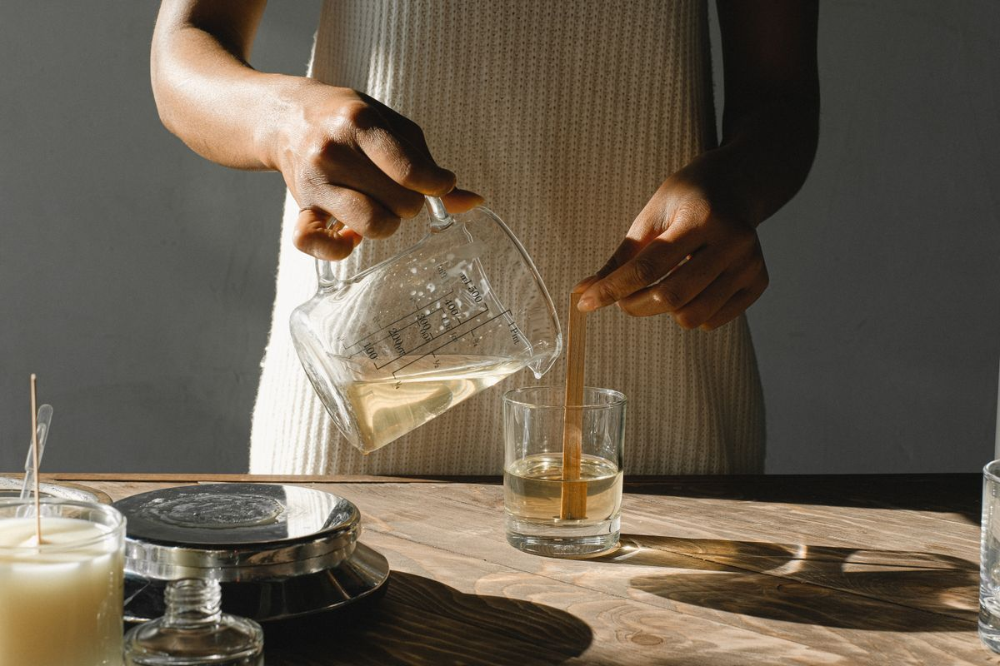

West End · Atlanta — Kwanzaa, 26 December to 1 January
Seven candles. Seven nights. One book.
I’m Imani Brooks, and I pour candles two streets from where my grandmother kept her kinara on the sideboard all year round. Kwanzaa is the week my whole year leans toward. Every mishumaa saba set that leaves my bench is weighed, wicked, cured for fourteen days, and entered in the ledger on this page before it goes out the door.

The lighting ledger, 2026
The mishumaa saba sit in the kinara in a fixed order — black at the centre, three red to the left, three green to the right. One new candle is lit each night, and every candle already lit is lit again. Read down the book and you can see why the black candle has the hardest job in the house.
Umoja — Unity
Black candle, centre of the kinara
Lit first — and lit again every night after. 7 evenings in all.
Kujichagulia — Self-Determination
Red candle, far left
Joins on night two and returns each night after. 6 evenings in all.
Ujima — Collective Work & Responsibility
Green candle, far right
Lit from night three onward. 5 evenings in all.
Ujamaa — Cooperative Economics
Red candle, middle left
Lit from night four onward. 4 evenings in all.
Nia — Purpose
Green candle, middle right
Lit from night five onward. 3 evenings in all.
Kuumba — Creativity
Red candle, inner left
Karamu night — the feast, the longest table of the week. 2 evenings in all.
Imani — Faith
Green candle, inner right
Lit once, on the last night, with all six before it burning beside it. 1 evening.
Why the colours sit where they sit
Black is for the people, and it stands in the middle. Red is for the struggle, to its left. Green is for the land and the future, to its right. Every set I pour follows the order on this page. If a set you bought somewhere else has the colours in the wrong seats, bring it by the studio — I will re-pour it in the right order at the cost of the wax.
Plan your set — the arithmetic is printed
A kinara set is seven candles, and they do not burn evenly: across the week the seven flames add up to 28 candle-nights (7 + 6 + 5 + 4 + 3 + 2 + 1). Pick a height and an honest evening — how long your table actually keeps the candles lit — and the planner works from the same table I pour from, printed right below it.
The Kinara Set Planner
Figures come from the bench table under the planner. If the black candle cannot last your week, the planner says so and names the size that can.
Candle height — one size for all seven
Hours lit each evening
- Total flame time, all seven
- 56 hours
- The black candle burns
- 14 of 40 hours
- Wax in the set
- 2,940 g · 2.94 kg
- Set price
- $91
This set lasts your week. The black candle works 14 of its 40 hours — it will still be standing, shorter and well used, when the last green candle is lit on 1 January.
Burn hours are from my own bench tests: one candle from every batch, burned four hours at a time on a still bench. Draughts and long Karamu evenings spend wax faster — when in doubt, size up.
| Size | Height | Burn per candle | Wax per candle | Price per candle |
|---|---|---|---|---|
| Petite | 4 in | 24 hours | 280 g | $9 |
| Classic | 6 in | 40 hours | 420 g | $13 |
| Tall | 9 in | 65 hours | 640 g | $18 |
All seven candles in a set are the same height, 3 inches across, in soy pillar wax with cotton wicks. A set is seven candles at the per-candle price — no set premium, no gift-wrap charge. The oak kinara is $38 when you need one.
The sets, priced plainly
Three heights, one order of colours, the kinara if you need it. Their stories — who asked, what I poured, how the week went — are on the sets page.
The Petite Set
$63seven 4 in pillars
For a first kinara, a small table, or a round of zawadi — the gift candles given on the last night. Burns true at an hour or two an evening.
The Classic Set
$91seven 6 in pillars
The set most West End families burn. Long enough evenings, a black candle with hours to spare, and stubs worth bringing back to the pot.
The Tall Set
$126seven 9 in pillars
For big rooms, long Karamu tables and families who light at sundown and talk past midnight. The black candle finishes the week with wax still in hand.
The Oak Kinara
$38holder only
Oak, seven seats bored true to the order on this page, finished with oil and wax in the studio. A low profile is available for tables where small hands do the reaching.
“Our first Kwanzaa, and I was nervous about getting the order wrong in front of the children. The set came with the ledger card, the black candle stood all seven nights, and my daughter read the principles off the card herself by night four.”
The book closes on 10 December
Soy needs fourteen days in the mould room before it burns its best, so the last pour day for Kwanzaa week is 10 December. After that, what is on the shelf is what there is — and the shelf is honest about it. Year-round candles, for every other table of the year, pour in every month.